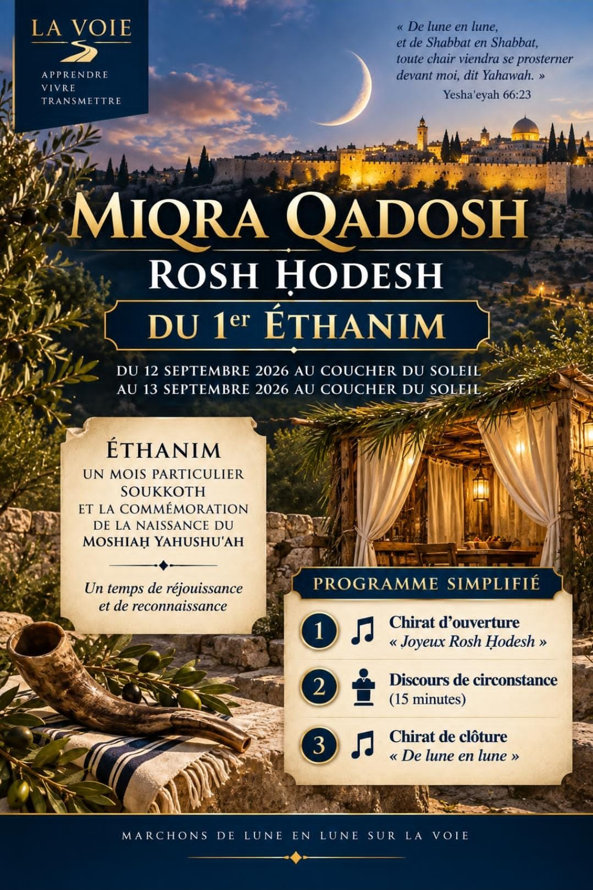

Nouvelle lune · Premier jour du mois d'Ethanim
Du 12 septembre 2026 au coucher du soleil
au 13 septembre 2026 au coucher du soleil
« De lune en lune, et de shabbat en shabbat, toute chair viendra se prosterner devant moi, dit Yahawah. » — Yeshaʿeyah 66:23
✦ Écouter la Chirat de clôture
0:00 / 0:00
✦ Programme simplifié
✦ Joyeux Rosh Ḥodesh à tous nos akhim et akhayòt ! ✦